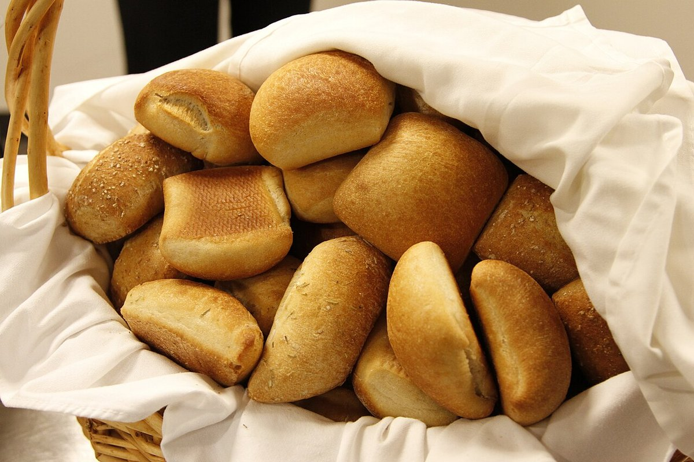
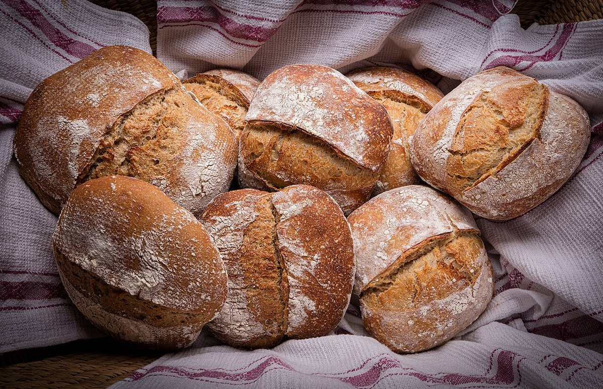
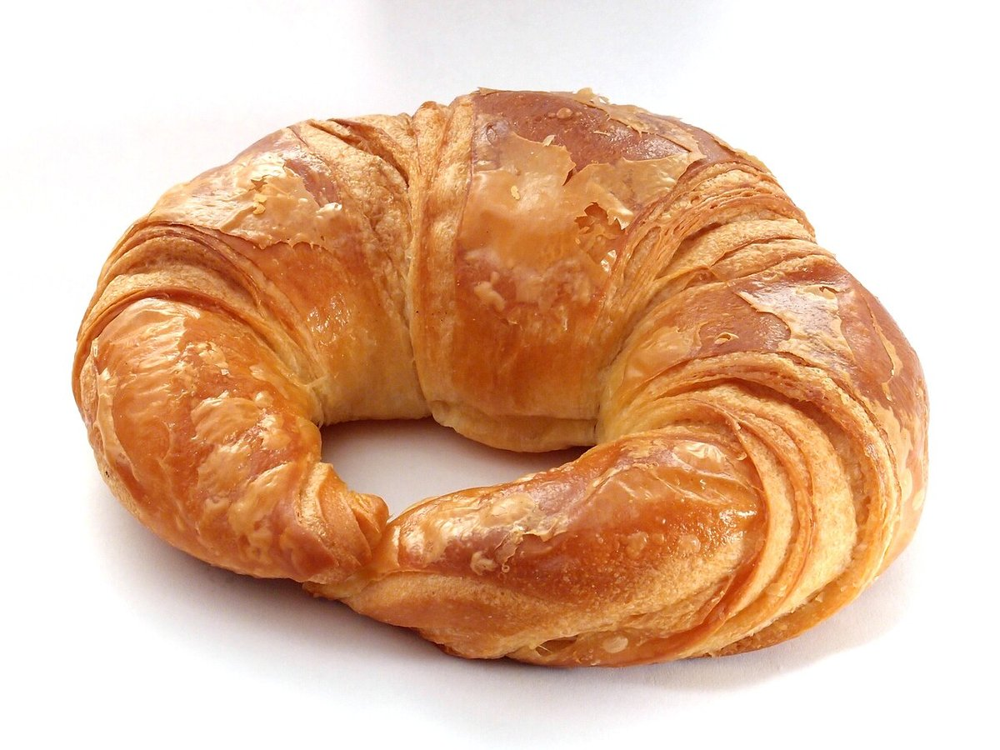
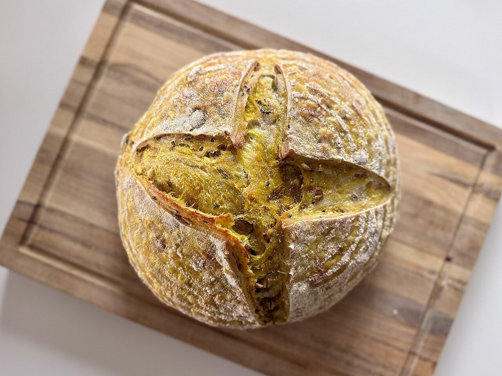
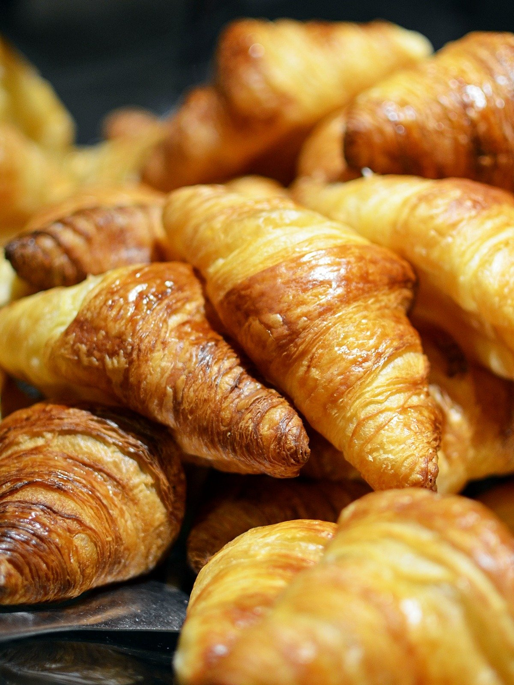

メニュー
商品名・価格は準備中です(お問い合わせください)。
準備中(お問い合わせください)
商品の内容や価格は、お電話またはInstagramでご確認ください。
パンのイメージ写真





掲載写真はフリー素材のイメージであり、店舗の実際の様子・商品ではありません。他地域で撮影されたものや、撮影地が不明なものを含みます。
最新の商品情報はInstagramで
Instagramで商品の情報を確認できる場合があります。